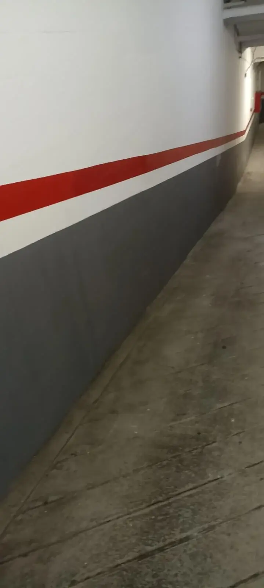
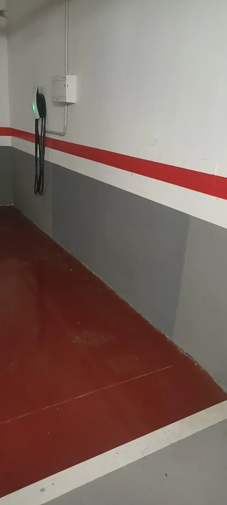

Ficha de obra
Pintura de un garaje comunitario
Paredes desconchadas en la parte baja. Reparación, zócalo gris y franja de señalización.
Estado inicial

Acabado




¿Tienes un trabajo parecido?
Cuéntanos qué necesitas y en qué municipio. Te indicaremos el siguiente paso.